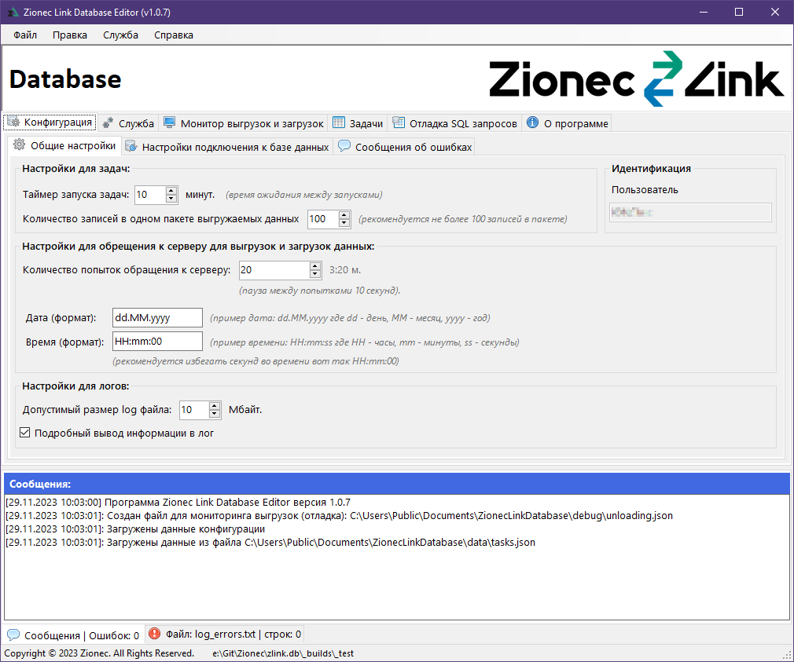
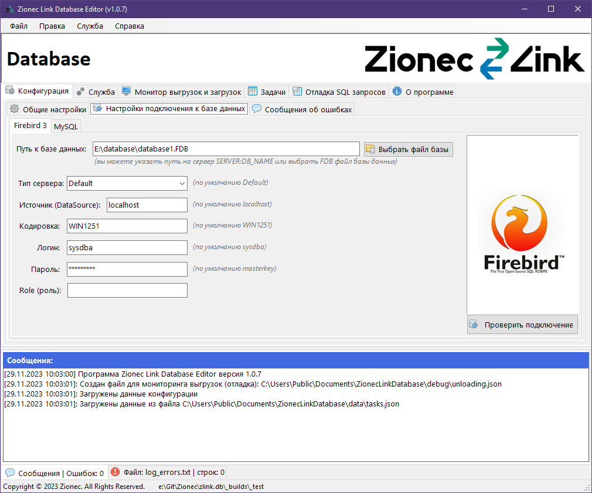
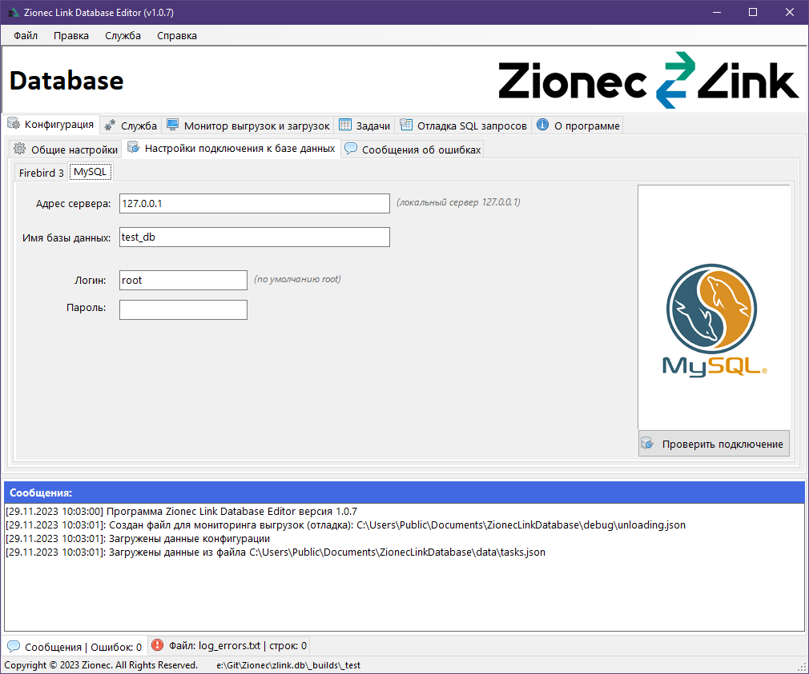
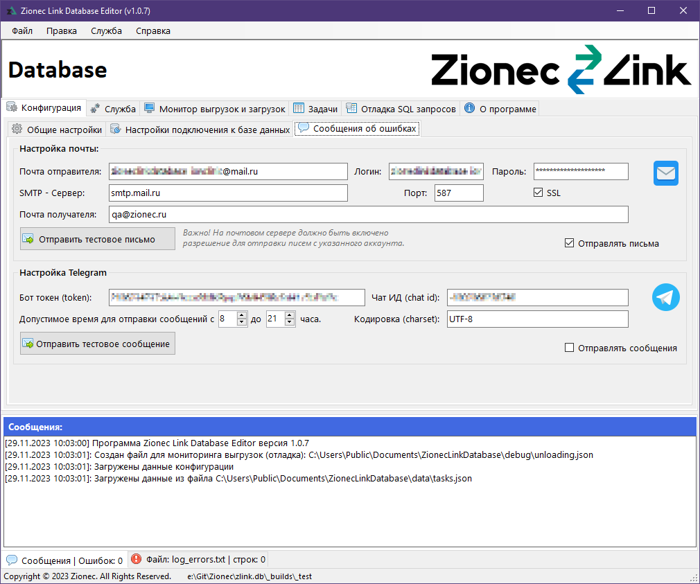
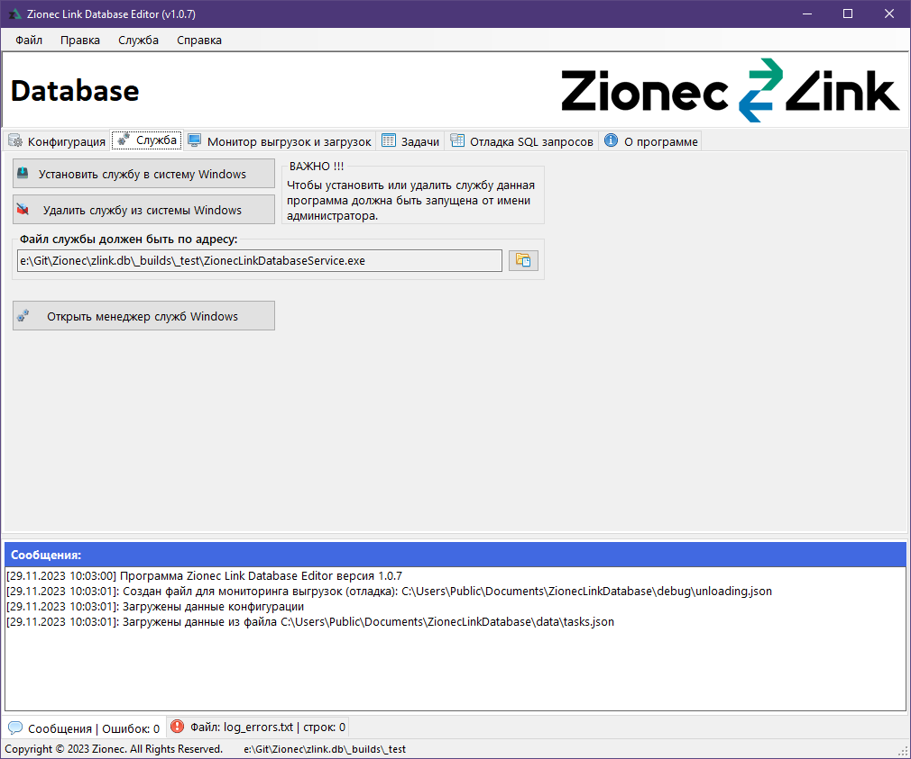
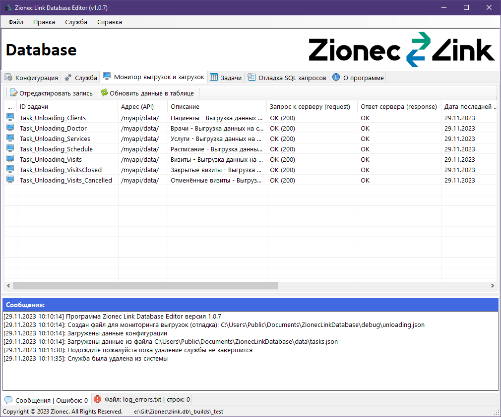
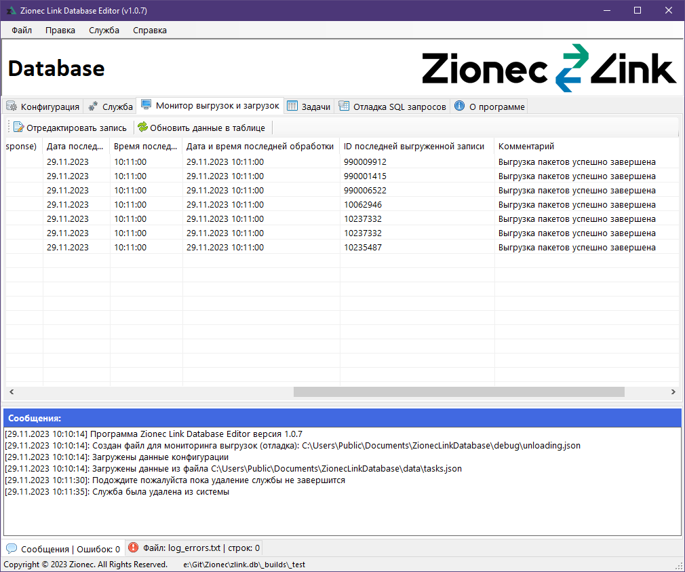
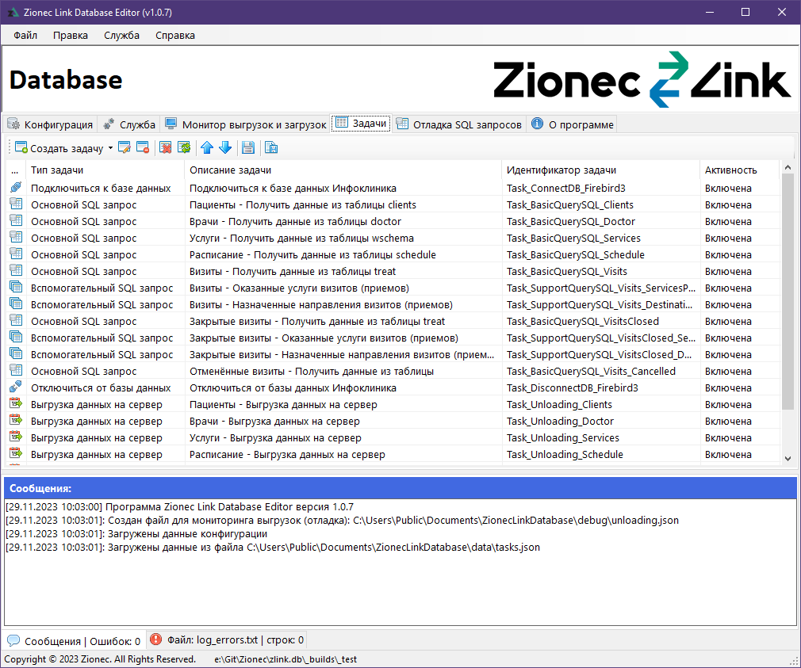
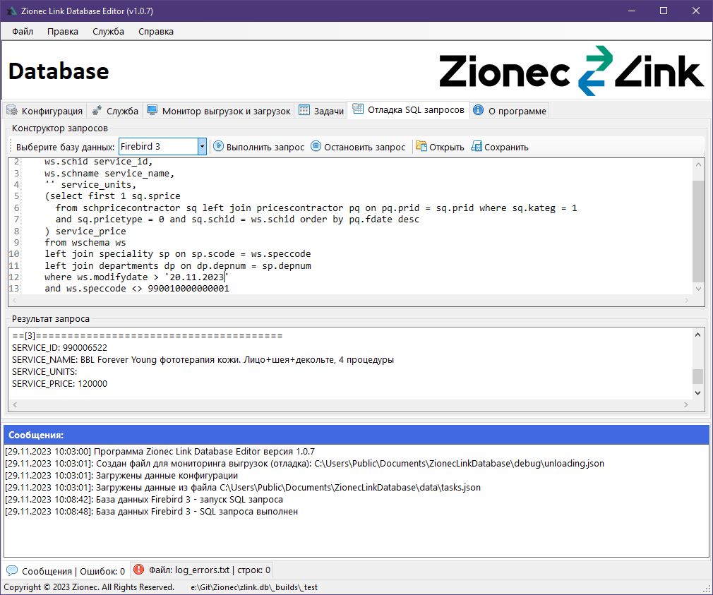
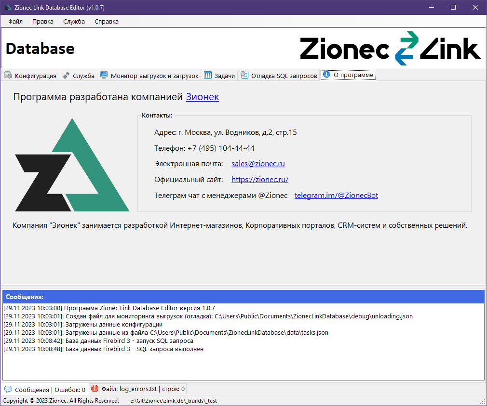

Общая информация:
Образование: Высшее
Специальность: Компьютерная инженерия
Место работы: Freelance (компания Zionec)
Должность: Automation/Manual QA Engineer.
Специализация:
- Автоматизированное тестирование (Automation Testing)
- Ручное тестирование (Manual Testing)
- Контроль качества (Quality Control)
- Нагрузочное тестирование (Load Testing)
- Тестирование баз данных (Database Testing)
- Разработка desktop ПО под Windows (C# Developer)
ZionecLinkInfoclinicConnect
Данное приложение выполняет выгрузку данных из базы данных Firebird в CRM Bitrix24.
Приложение разделено на программу и службу.
Программа ZionecLink.exe — это GUI программа для настройки конфигурации приложения и ручной выгрузки данных из базы данных в CRM Bitrix24.
С помощью этой программы: настраивается подключение к базе данных, устанавливается таймер периодичности обращения к базе данных, устанавливается и удаляется служба из операционной системы, производится первичная выгрузка большого объема данных из базы данных в CRM Bitrix24.
Статья опубликована компанией Zionec: Внедрение CRM и тесная интеграция МИС «Инфоклиники» с «1С-Битрикс24» в многопрофильной клинике реабилитации
Служба ZionecInfoclinicConnectService.exe – после установки и запуска, служба выполняется в фоновом режиме. Цель службы заключается в том чтобы с определённой периодичностью (по умолчанию раз в 10 минут, это значение можно менять) обращаться к базе данных и получать новые данные для выгрузки их в CRM Bitrix24.
При каждой успешной выгрузке приложение запоминает дату и время последней выгрузки и следующая выгрузка будет с учетом новой даты и времени и выгруженные ранее данные повторно выгружаться не будут. Если по какой-то причине данные не были переданы или приняты CRM Bitrix24 в таком случае дата и время последней выгрузки меняться не будут и через 10 минут выгрузка повторится с учетом данных которые не были выгружены в прошлый раз.
Статья опубликована компанией Zionec: Безоблачная интеграция: связываем МИС Инфоклиника с любым сервисом, СУБД, CRM без абонентской платы модулем Зионек Линк











Git: github.com/Somov-QA
Git: github.com/SomovStudio

Email: somov.studio@gmail.com

Skype: evgen_catfish